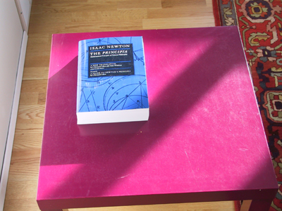

on another object B, then object B exerts a force on
object A equal to -.
on another object B, then object B exerts a force on
object A equal to -.If an object A exerts a force
Comment 1. Forces are the result of interactions between pairs of objects. The interaction between a pair of objects always gives rise to two forces that are equal in magnitude and opposite in direction. One of these forces acts on one of the objects, the other force acts on the other object. In Newton's words, as translated by I.B. Cohen and A. Whitman "If anyone presses a stone with a finger, the finger is also pressed by the stone."
Comment 2. Newton's third law is sometimes summarized by the glib phrase "action is equal to reaction". If the statement is not carefully explained, it can be interpreted in all kinds of ways, most of which different from what is intended in Newton's third law. Nevertheless, for brevity's sake, the term reaction force will be used occasionally to refer to the Newton's-third-law partner of a given force.
By "reaction force" to a given force one always refers to the partner of the force that results from the same interaction between the two objects as the given force.
E.g., if a book rests on a table as in the illustration below,

there are two forces acting on the book: the downward gravitational force exerted on the book by the earth and the upward normal force exerted by the table on the book. Although these forces are equal in magnitude and opposite in direction in the given situation, they are not an action-reaction force pair because they arise from different interactions: the gravitational force from the gravitational interaction between the book and the earth and the normal force from the molecular interaction between the molecules in the top layer of the table and the bottom layer of the book.